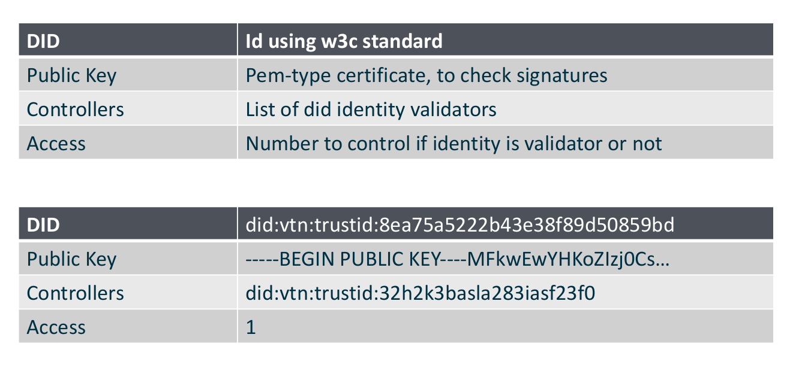
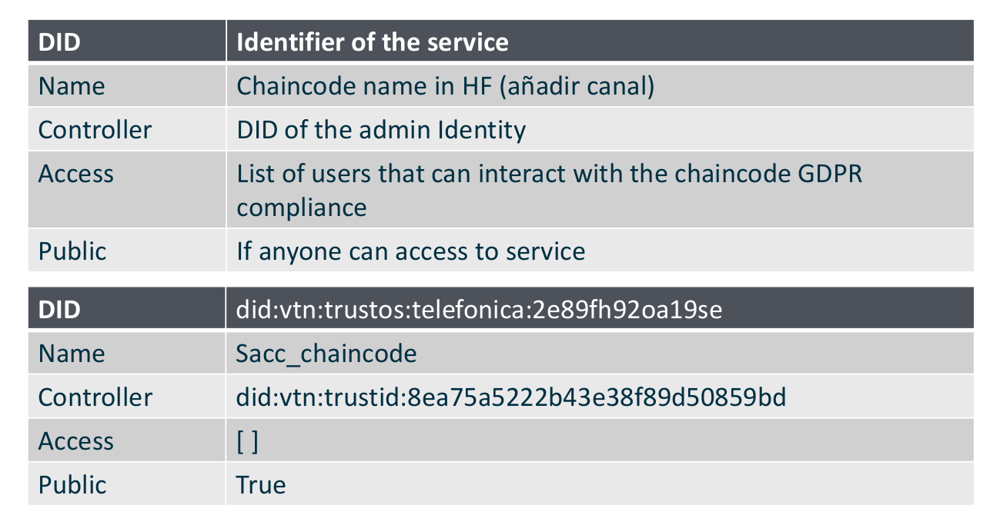

TrustID¶
TrustID is a standalone identity module for TrustOS. We followed a decentralized identity approach for its design, where users (and services) are identified through a DID.
These DIDs follow the W3C standard, and they serve as a unique ID to identify users. DIDs aggregate all the pieces of public information required to authenticate a user (i.e., their public key or X.509 certificate).
 
In order to uniquely identify chaincodes and services deployed in TrustOS, we decided to also give them DIDs so that they could be seamlessly discovered and accessed even if they “live” in independent channels not shared by all the organizations of the network.
All the authentication and management of identities in the system is performed on-chain through an “Identity Chaincode.”
If user A wants to start interacting with the network, he requests the generation of a new DID. The related keys to this DID could be an existing X.509 issued by a valid organization, or even an Ethereum-related public key (internally we use all the JWS, JWE, JWK, secp256k1, etc. RFCs to make our Fabric infrastructure compatible with identities of any nature for the sake of interoperability). This DID generation request has to be validated by a valid organization of the network. Once verified, every transaction signed by user A and directed through a Proxy chaincode is authenticated successfully and delegated to the corresponding chaincode.

The TrustID project is conformed by the aforementioned chaincode and a client SDK to ease the integration and interaction with TrustID-enabled networks.
TrustID is designed to ease the management of identities for the case of TrustOS. Users shouldn’t need to hold a different set of credentials for each network or decentralized application they interact with. The same credentials used to access your owned Bitcoins and manage your tokens in Ethereum should let you update the state of a Fabric asset or launch a secondary market in TrustOS.
TrustID SDK¶
This SDK exposes all the functionalities required to interact with TrustID-based DLT networks.
Example of use¶
// Use library
var id = require('coren-id-sdk')
import { Keystore } from './keystore/keystore';
// Initialize wallet
wal = id.Wallet.Instance;
// Create Keystore
ks = new FileKeystore();
// Set keystore in wallet
wal.setKeystore(ks)
// LoadKeystore from file
wal.loadKeystore('file', './keystore')
// Set endpoint of driver and store in variable to use it.
const hfdriver = wal.drivers.hf
hfdriver.setEndpoint("http://localhost:8080");
// Use the wallet and the driver
wal.generateDID("RSA")
hfdriver.createIdentity(wal.getDID("default"))
Structure¶
The library has the following modules:
Wallet¶
wallet.ts: Core module of the library. It wraps all the state and logic for identity management and interaction with TrustID networks. To start using the SDK a new wallet needs to be initialized. A wallet exposes the following methods:public setKeystore(keystore: Keystore): void:public generateDID(type: string, controller: string, passphrase): DID
And stores the following information:
class DID: Has the following structure.public id: string: Id string that identifies the DID.public pubkey: string: PublicKey of the DID.public type: string: Key type (RSA / EC / OKP).public controller: string: Verifier of the identitypublic access: number: Access levelprivate privkey: string: Private Key of the DID.
And exposes the following functions:
public unlockAccount(passphrase: string): void: Unlocks private key in order to use the DID.public lockAccount(): any: Locks the private key for a DID.public sign(payload: object, passphrase: string): string: Sign a payload with a specific DID.public verify(signature: string, id: string): any: Verifies a signature from a DID.
Driver¶
driver.ts: Interface that enables the implementation of connection drivers with different TrustID networks. The only driver implemented currently is thehfdriver.tsenabling the interaction with Hyperledger Fabric TrustID networks.setEndpoint(endpoint: string): void: Sets the network endpoint to interact with the TrustID network.createIdentity(did: DID): Promise<object>: Create an identity in TrustID. It generates a new DID in the wallet and register it in the network.verifyIdentity(adminDID: DID, id:string): Promise<object>: Verifies an identity as an admin.getIdentity(did: DID, id: string): * Promise<object>: Gets a registered identity from TrustID.revokeIdentity(adminDID: DID, id: string): Promise<object>: Revokes a registered identity. Only supported by the owner or controller of the DID.createService(did: DID, serviceDID: string, name: string, isPublic: boolean): Promise<object>: Creates a new service in the TrustID network.updateService(did: DID, serviceDID: string, access: Access, isPublic: boolean): Promise<object>: Updates the information from a service.getService(did: DID, serviceDID: string): Promise<object>: Gets information from a registered service.invoke (did: DID, serviceDID: string, args: string[], channel: string): Promise<object>: Invokes a function of a registered service in the TrustID network.query(did: DID, serviceDID: string, args: string[], channel: string): Promise<object>: Queries a function of a registered service in the TrustID network
Keystore¶
keystore.ts: Interface that enables the implementation of keystore storages. There are currently two implementations of keystore supported:FileKeystore.ts(to store DIDs in file keystore)andMongoKeystore.ts(to store DIDs in MongoDB).abstract getDID(id: string): DID: Get specific DID from keystore.abstract storeDID(did: DID): boolean: Store DID in keystore.public storeInMemory(did: DID): boolean: Store DID inMemory for easy and performant use.public listDID(): string[]: List DIDs in memory.public setDefault(did: DID): boolean: Set DID as default identity for the keystore wallet.
If you want additional information of TrustID, its SDK and its functionality check the following repo.
ID API¶
An abstraction TrustID API implementation. It wraps the functionality of the TrustID SDK in order to offer basic identity management services to users comfortable delegating the responsability of their keys to a custodian. ID API acts as the third-party custodian of the users keys.
API Specification¶
The implementation considers that the API is the third-party custodial of TrustID keys. Currently the keystore is implemented with a FileKeystore, MongoKeystore comming soon. Private keys from users are stored ciphered with a passphrase. In order to call every function and unlock the account the passphrase needs to be provided. The API has the following routes.
Methods¶
POST - /id/login¶
It return a JWT to interact with services authenticated using JWT using TrustID as identity backend. This functionality is offered for every user in the system (even those for which we are not the custodials of the keys). Some services may be still authenticated with JWT, and we want to support this authentication even of TrustID users.
Sample structure (Click to expand)
{
"id": "did:vtn:trustid:ae0213fncasdf234",
"password": "pass",
"payload": {
"arg1": "NonCustodianu",
"arg2": "seSDKtoGeneratePayload"
}
}
POST - /id/refresh¶
It refreshes a JWT login.
POST - /id/sign:¶
Requests a signature using a key in custody. Useful when a user has to share signed payloads off-chain.
Sample structure (Click to expand)
``` { "password": "passphrase", "payload": { "arg1": "test", "arg2": "payload" } } ```POST - /id/revoke¶
Sends a request to revoke a specific identity. You need to be the owner of the identity or its controller to perform this task.
Sample structure (Click to expand)
{
"id": "did:vtn:test",
"password": "passphrase"
}
POST - /id/create¶
Create a new identity with the key determined in type and a passphrase to lock the private key.
Sample structure (Click to expand)
{
"password": "passphrase",
"type": "RSA"
}
POST - /id/verify¶
Verification of a registered identity by a controller in the system.
Sample structure (Click to expand)
``` { "id": "did:vtn:test", "password": "passphrase" } ```POST - /id/get¶
Gets the information from a registered identity.
Sample structure (Click to expand)
``` { "id": "did:vtn:service:012343", "password": "passphrase" } ```POST - /service/create¶
Create a new service in the TrustID network.
Sample structure (Click to expand)
``` { "serviceID": "coren-trustcc", "password": "passphrase", "name": "chaincode-name", "isPublic": true } ```POST - /service/update¶
Updates the information of a service.
Sample structure (Click to expand)
``` { "serviceID": "coren-trustcc", "password": "passphrase", "access": 0, "isPublic": true } ```POST - /service/get¶
Gets the registered information for a service.
Sample structure (Click to expand)
``` { "serivceID": "did:vtn:service:012343", "password": "passphrase" } ```POST - /service/invoke¶
Invoke a function from a distributed service using TrustID.
Sample structure (Click to expand)
``` { "serviceID": "did:vtn:trustos:123drfw", "password": "passphrase", "args": [ "a", "b", "200" ], "channel": "channel1", "function": "create" } ```If you want additional information about this API implementation and its functionality check the following repo.
Roadmap¶
Work in progress…